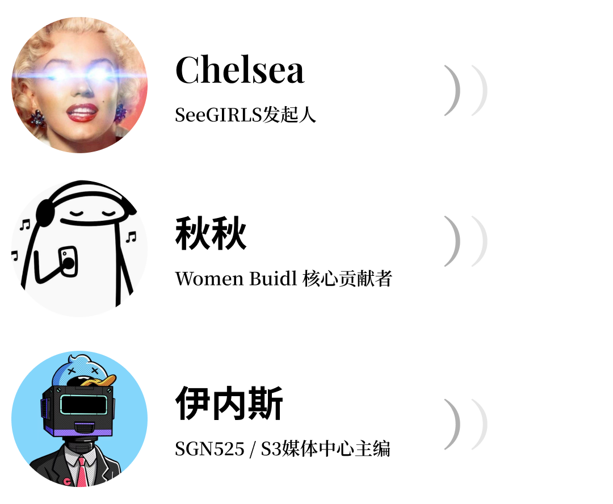

◇◇◇◇◇◇◇
Chelsea
欢迎来到Web3她声音，本期的话题是“活在别人的影子里，你不累吗”。本期灵感来自于女孩成长过程中面临的心理和情绪问题，所以我们跟彼此很熟悉的SeeGIRLS老成员组织了这样一期谈心话题。
关于别人的影子，我有一种理解：我们在成长过程中或多或少都会有一些偶像榜样，从中获取力量或学到东西，但事实上他们并不都会展现好的一面，盲目的追求也可能会丢失自己感到迷茫。今天就围绕这个主题想跟我们两位嘉宾来一起聊一聊，在我们女孩成长过程中发生的那些一二三件事。欢迎本期的嘉宾和大家打个招呼，介绍一下自己。
秋秋
大家好我叫秋秋，我是SeeDAO三期新手营的小伙伴，也是SeeGIRLS的成员，目前在开发者社区做前端开发，要是大家有关于Web3的开发也好，SeeGIRLS相关的话题也好，都欢迎找我交流。
伊内斯
我是伊内斯, SeeDAO S3市政厅媒体中心主编，也是第一期SeeGIRLS的先锋者。
Chelsea
OK, 那我们就正式开始话题。第一个话题是想问我们两位嘉宾，在回顾成长过程中有没有做过一些离经叛道的事，或有没有过一些童年偶像或是榜样？
先从我自己说起，我对离经叛道的事已经没有特别具体的印象了，但我跟我的母亲在青春期的时候关系一直非常僵硬。我妈妈是一个非常有想法，比较强势和有控制欲的人，她口中总有一个隔壁邻居家的姐姐会拿来跟我比较，这个姐姐成绩永远比我好，起的永远比我早，起床的第一件事就是放磁带，背单词，背完单词就是弹钢琴。我很少见到她，但她仿佛一直在我的童年生活中，是一个符号式的东西，是我学习的榜样，但她同时也成为了我长大后心中的一道阴影，这个阴影给我制造焦虑和压力，让我觉得我得比她更好，这样我妈妈才会表扬我喜欢我。我讲的过程中没有任何负面的感受，这只是对我母亲的复杂情感中的一环。
我想先拿这个小故事来引出你们的故事，先从秋秋开始。
秋秋
我是从小学初中那会儿就不太喜欢上学，沉迷网吧，因为朋友很喜欢打游戏，我也上瘾了。我家在潮汕，那时家里不是很有钱，但是我很沉迷，沉迷到逼我爸妈给我买电脑，我能够半夜不睡觉甚至定闹钟起来，就为了游戏级数比我的同学高，夸张到跟我弟抢电脑拔鼠标线，还说我不上学了，一心想早点出去打工赚钱，觉得自己贼厉害，我觉得我都疯掉了。不知道为什么，现在已经对游戏没有兴趣了，可能是三分钟热度，再回想小时候爱游戏爱到那么疯狂，就会觉得好无聊。这个就是我最叛逆的事情。
伊内斯
我这边一路上欣赏的偶像还挺多的，他们会影响到我做一些决定，比如香港比较出名的一个音乐人，张国荣。我可能相对早熟一些，初中就开始谈恋爱，当时一上来谈的就是同性，按常规逻辑来讲，大家都会说这是我的闺蜜或好朋友，但我对家里人的时候，就会去梳理这个思路，比较坚定地告诉他们，这是不一样的情感。
那段时间还挺疯狂的，差不多读初二，十四五岁，整个年级的人都知道了。那时阻力很大，老师来跟我聊天，我妈限制我出行，如果出门去哪跟谁都要报备。我当时的整个人都陷进去了。
Chelsea
你当时是什么样的勇气和状态？
伊内斯
以前其实是特别乖的，和我妈关系很好，因为这个事情跟我妈闹掰了，一直冷战。我当时不太会去处理这种关系，可能不会像很多那样去考虑很多东西再做决定，如果考虑的多了，反而可能无法像当时果断袒露出来。
Chelsea
我有一个很好的闺蜜，也是初高中同学，她在高中的时候是交往男朋友的，后来到了大学，她对一个美院的女孩一见倾心。她们现在已经在一起很多年了，但我的朋友一直没有办法很好的跟她的父母去袒露。这里有很多原因，并不是我的朋友自己主观不想袒露，而是尝试过很多次，但一直在被父母回避这个事情，回避的方式就是用“我很忙”“之后再说”这样一些理由把这个事给推开，她每隔一段时间积攒的勇气都会再次崩溃。
我记忆深刻的是，去年过年我不在家，但朋友在老家，就去拜访了我妈。我妈其实是知道她双性取向的事的，她非常喜欢我这个朋友洒脱不羁的性格和她身上的品质。那天拜年我妈看到她明显有心事，就拉着她的手轻轻的问怎么了，发生了什么事吗，然后我朋友一下就哭了，淡淡的讲了和父母沟通但没有结果这个事情。当我妈跟我讲这个事情的时候，我真的很心疼多年的老友，这么多年了还是沟通无果，其中苦涩只有她自己知道，这感觉太孤单了。
所以我非常惊讶伊内斯当年那么勇敢向母亲去说出这个事情，可能放现在再回到那个时间点，就不会不计后果的去说了对吗？我非常庆幸你在那时候说了出来。那么时隔这么多年，你跟妈妈对于这件事情的态度是怎样的，她有改观吗？
伊内斯
变化是有的，但要是我再回到那个时间点，我还是会说。可能跟我性格有关，因为在家里面我妈是比较强势的，我没有对她撒谎而是选择坦诚，可能一开始会伤害比较大，但其实也相当于在摆脱一种强权。这个抗争源自于我产生了自我意识，感受到心之所向，跟我自己原本以为的观念发生了冲突，就做了这样的决定，可能对我之后在成长路上做出不符合主流的决定，存在相通的逻辑点。
但是现在跟她的关系缓解了一些，就像回家之后碰到一些认识的人或长辈，他们问到个人问题，我妈也会帮我解释之类的，但这有一个很长的过程。一开始我面对的冲击太大了，不管是精神还是肉体上的，曾经也是爱恨交加，想未来只顾自己，但后面还是想少做点后悔的决定，现在彼此之间也有了一些理解和成长。
Chelsea
很开心你跟父母的关系有了这样的变化，我觉得时间是能抹平和治愈很多事情。听下来我和伊内斯跟我们的妈妈之间都有些背后的故事或者心结，那么秋秋跟家人的关系是怎么样的？
秋秋
对我来说的话，在我还没有觉醒之前，其实和家里人关系还挺好的。小时候父母经常吵架，我会想说长大了就好了，然后长大又觉得可能等我工作就好了，毕业后赚钱后，慢慢的关系会越来越好，但是等到我现在真正工作之后，就跟父母的关系进入下一阶段了。
以前我们是小孩，现在父母慢慢老了，就会有一个变化，反过来我们是家庭和收入的主力来源，我刚工作，还无法到达很厉害的程度，但是父母又对我抱有很多期望，我又达不到，再加上父母在老家，我们又在城市里打工，现在对我来讲其实比较尴尬，不知道怎么跟父母相处。这个阶段他们虽然说没有要求，但其实会各种push你去结婚，去这个那个，但现实是你刚工作，他们帮不上忙，也无法提供情绪价值。
以前我会学着朋友每天给家里打电话当贴心小棉袄，后来我开始接触了一些例如上野千鹤子这样一些女权知识，意识到现在这个阶段，我的发展和未来更重要，于是就做了一个虽然目前来说不是很好，但对我来说比较解放的选择 — 就是没什么联系的那种状态，其实挺痛苦的，但是不联系对我来说又是一个避免争吵的解脱。
Chelsea
非常理解秋秋现在的处境和心态，我们这一代在成长过程中会遇到各种这样的问题，东亚文化中孝的思想刻在我们的骨血里，非常深，父母对我们的期待也都伴随着“孝”这个字的出现。但在互联网时代，我们会接收到一些西方和外界的信息，所谓“更自由的世界”，就会对我们产生一个拉锯，这是成长中必经的一个阶段。这个阶段父母说的很多话很容易影响到你的情绪和生活，所以你想铸造一座高墙来隔离这负面情绪，让自己的生活可以不受影响的正常经营下去，那我相信下一个阶段你会慢慢亲手去拆掉这些高墙。
秋秋让我想到身边有个好朋友，为数不多很高大帅气的男孩子，他平常在我们社交圈中是非常西化外放和活跃的，直到有一天他在朋友圈带来一个消息，说他要结婚了，我们都很惊讶。后来聊天我们才意识到，原来他有很强的宗族使命感，或者是他的原生家庭给他带来的宗族观念深深刻在他骨血里，觉得30岁是一个坎，男生就是要尽快结婚，成家立业。所以当他遇到这个女孩，觉得很贤惠非常合适，就觉得是时候稳定下来了。所以我特别好奇，现在宗族观念在比如家族文化很深的广东潮汕这些地区，仍然是存在的吗？
秋秋
是的，虽说已经21世纪了，跟我们父母那一辈已经发生了很大的变化，但是像宗族的观念，我们的父母他们一辈子走过来，还是会按照那一套来，只是说我们这一代更多人有机会接受教育，但那些传统的文化还是会保留。
你刚刚说到“贤惠”，其实我特别讨厌这个词，因为这个词在上海也好，广州也好，深圳也好，每次如果我介绍自己来自潮汕，他们就会说，诶你们那边的女生都很贤惠。以前我不觉得这个词怎么样，现在我觉得这个词虽然是在夸人，但听起来就像是理应在家相夫教子，在家里帮忙一样。我妈妈她们一辈除了公务员老师之类的女性有工作之外，很多都是在家里带孩子帮衬，男的他们赚钱就觉得自己很厉害，就造成女性没有地位，也是因为这样宗族概念形成了一个定势。我们那边会为了生男孩拼命生，父母都会说你们以后赚钱了要帮你的哥哥和弟弟，让他们有面子，你才有面子，然后在你们的宗祠里你们家才有面子。
Chelsea
这在我看来是在现代社会中近乎荒谬和不可想象的一个情境。我知道秋秋你是一个有点儿勇敢反叛劲儿在身上的女孩儿，并且你是个程序员，做着偏技术侧的工作。我很好奇在成为现在的你的过程中，有遇到什么来自家庭的阻力吗？
秋秋
我家的话，因为我是女孩，都会说女孩不用上学，我小时候也确实喜欢玩不太想上学，但因为我妈妈不是潮汕人，是湖南人远嫁过来的，会比较顾着我们，我还是比较幸运的。初三那年我姐姐在重点高中读书，然后在我姐姐那里我知道世界上原来还有重点高中这个东西，当时就突然想要读书，有了目标，我就努力的学习。但是到高中之后有很多厉害的人，性格就变得有点敏感和自卑，不过后来也考上了重点高中上了大学。
我觉得我的成长还是因为我姐帮我踩了坑，学习和报志愿给我提供了很多帮助。以前我很羡慕那些独生子女，现在我是数字游民到处跑，就发现我有姐姐和弟弟就贼爽，有问题跟他们沟通和报备，他们就支持我，帮我跟爸妈沟通打掩护，他们也在父母身边，我也可以比较放心的出去浪。
Chelsea
老羡慕了，我是独生子女，一直对有哥哥姐姐、兄弟姐妹的朋友非常羡慕，这样挺好的。我们刚才提到了反叛精神，想知道你是经过一个什么样的契机变成现在这样的性格？
秋秋
其实我觉得我也不是很反叛。小时候可能是朋友带我玩游戏，确实是沉迷了，后来高中好像是读书，那时候很喜欢三毛，很向往她的生活，豆瓣还关注了一个博主，他是一个数字游民，那时候不叫数字游民叫自由职业，他写了很多背包客的游记，可能冥冥之中就注定了我现在走向数字游民的道路。还可能是我星座的原因，双子座喜欢追求有一些新的事物，包括现在对Web3也是这样子。
我毕业去了互联网公司，但我发现互联网公司真的不行了，就来了Web3, 现在的想法就是在一个能承受最大风险的止损点前提下，可以多多冒险。我观察到很多优秀的人都在这个领域，也会给自己找很多理由和借口，觉得还是可以接受的。
Chelsea
明白。我记得我们在备采的时候你有提到，相较于现在的你，曾经你对一些事情的观点更中立更平和，直到你受到了一些榜样的启发，更加意识到有些观点和声音需要被持续地大声说出来才能让更多人听见，需要有人去做这个先锋。你可以给我们说说这一段经历吗？
秋秋
这个还挺有意思的。我小时候是属于那种和事佬，很害怕吵架，我永远都是说和气生财，我朋友后面他们就会觉得我好像没有什么观点一样，其实挺痛苦的。我觉得可能是家庭让我很会察言观色，我怕引起矛盾，不敢去挑衅，小心翼翼的做事。到后面认识了很多有意思的朋友，她们都是e人，个性很张扬，我觉得她们贼酷，就想说怎么可以学一下她们这种，但其实我根本的思想并没有改变。
真正的改变是在我后来玩推特的时候看到很多激进女权，还关注到了上野千鹤子，林毛毛，她们都属于 radical feminism，简直是我的互联网嘴替，会diss各种各样的现象和不公，画风犀利，然后我就想，人嘛，你想发疯就发疯想吵架就吵架，不用去讨好，很多时候如果你不去提出问题或者当那个坏人，反而很难去解决问题。我觉得激进的时候真的像在做革命一样，你能够有一些思辨和鲜明的态度，反而就像在做决策。
Chelsea
秋秋讲的这一段经历我深有同感，因为我感觉自己的底层性格就是像秋描述的这样，喜欢和平的和事佬，当我意识到后，深度的思考过为什么会出现这样的情况，这又不免联系到我妈妈了，但绝不是说我生活中所有问题都得归因于我的家庭，但确实成长环境和经历不可避免的塑造了我的一些性格。
我妈是一个非常懂礼节的人，我们家也是一个大家庭，如果有什么家庭活动、酒席、祝寿之类的都是她来操办，所以从小给我的观念就是要非常懂礼貌和礼节，在场合中看眼色做事，不合礼节突破常规的去做事是不好的不被喜欢的，不受待见的。所以我这种左右逢源和平相处的感觉就深入到了我的基因和骨血里，包括现在进入社会也是一样，我不喜欢冲突。但是当我看到很多很会吵架的人的时候，我竟由生出一种羡慕感，我反思自己这种和平大使的角色并不是因为我喜欢和平，反而可能是因为我内心的冷漠和懒惰。当我意识到这一点，那一刹那就像点燃了我一根火线的那种感觉。
秋说的一些非常叛逆或者极端的声音，他们背后不一定是盲目的狂妄和无知，反而可能是因为看清了某些事情，知道需要更大的声量让更多人了解。我仍然是一个和平主义者，可能很难改变了，但若说某一时刻把我逼急了我可能也会调起自己吵架的那一面。
伊内斯在我眼中一直是一个情绪非常稳定，比较性冷淡的这样一个形象，我想知道你有没有失控或者爆发过的时候？
伊内斯
基本上能让我失控的都是我很在意的事情。比如刚刚讲很小的时候，有次一开学，有个女生就帮我出了柜，那天中午我就找她单独聊了一下，看她回到座位哭了一下午，之后也没有跟我说过一句话。
Chelsea
我觉得这一期非常有意义，就像是在人生每个阶段的记录，当你到下一个阶段回头再来看的时候，会发现原来那个时候我是这么想的，也许在下一个十年，遭受过毒打之后，你会跟你的长辈说，我仍然这么想。刚刚伊内斯你提到失控的时刻通常都是展现在周围人的身边，那如果按照身边人的重要性排序的话，大概会是怎么样一个顺序？
伊内斯
排序目前来说是亲情，然后爱情，再是友情。我不太倾向把自己剔除来将这三个东西做一个排列，我觉得自己很重要，但如果没有我的话这三个就没有任何排序的必要。我会在我的认知里面去估算当下或者中长期的一个状态，还有我自己的规划，希望能够找到平衡点，我不太喜欢向某一方纯粹的妥协。
Chelsea
在我认识的像伊内斯这个年龄段的一些年轻人中，他们其实把自我排的很前，其实我自己也一样，所以伊内斯有这样的思考我很惊讶。
近些年我们家遇到一个事，让我对跟父母的关系以及对父母孝顺这个事情有了重新思考，它是一个转折点。中国有句老话：子欲养而亲不待，我不想这样说，但我就是很怕想去陪伴他们的时候他们不在身边了，那种后悔是我一生都无法弥补和填满的。所以刚刚我们说社会的毒打，可能不只是工作上的一些问题，也包括生和死，多经历几次可能会对父母关系也好自己的人生排序也好，都会有一些改变。
秋秋呢，如果要排序的话会怎么样？
秋秋
我目前来说这个阶段第一排序是我自己，然后是我的家人，然后是我的朋友。因为我现在是属于一个转折期，自己是数字游民，对我来说挑战还挺大的，目前接触更多的是一些Web3的朋友，但其实大家也来来往往没有固定的，所以我感觉可能以后真正能陪伴自己的只有我自己，我会更加去爱自己。家庭的话就是会发现一个人在外游，朋友的话即使跟他们关系再好，真正紧急可联系的还是家人。其次是朋友，家庭带给我温暖，而朋友让我的人生更丰富。
Chelsea
是的，父母大概率肯定是会先我们离开一步，然后我们从此之后的人生只有去处，再也问不到归处。那么当父母离开之后，我们的人生更多都是在学会如何跟自己相处，我是谁，我要做什么，我要去哪，人的一生都是围绕自己而展开的，这是没有错的。慢慢形成自己的人格和态度，用自己的眼睛看世界。不活在别人的评论里、影子下，真的是一生的课题。
那么今天的话题就分享到这里，谢谢两位嘉宾的分享。
◇◇◇◇◇◇◇
文字整理 | T1NG
排版 | T1NG
审核 | Ines
扫码加入SeeGIRLS微信群 与我们一起探索